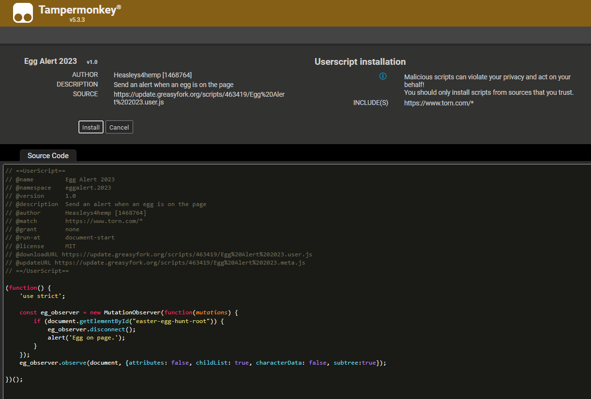
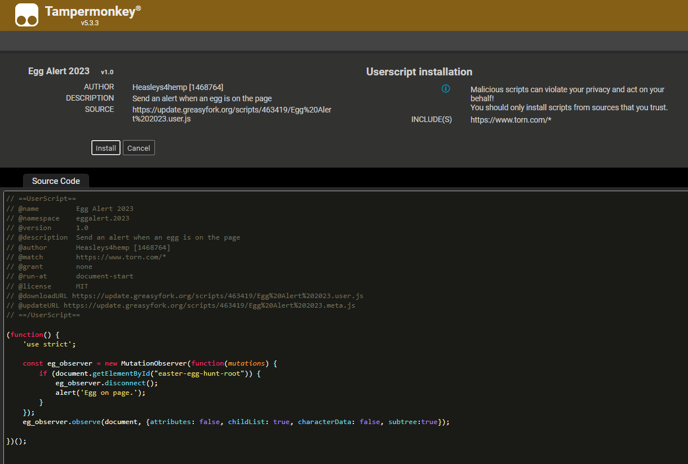

Install Tampermonkey & Scripts
Five‑minute setup — Chrome · Edge · Firefox · Brave
Step 1 — Add Tampermonkey
 Install the extension
Why Tampermonkey?
- 🔄 Auto‑updates keep your scripts fresh.
- 🟢 Easily enable/disable individual scripts.
- 🗑️  One‑click removal if something breaks.
Install steps:
- Tap your browser below.
- Press Add extension / Add to Firefox.
- Pin the TM icon for quick access.
https://chromewebstore...tampermonkey

Step 2 — Browse the gallery
 Find scripts
Power‑user tips for GreasyFork:
- â Check rating and install count (social proof).
- 📅 Prefer scripts updated in the last year.
- 💬 Peek at the Feedback tab for unresolved bugs.
- 🔍 Search terms: revive, egg, stats, timer.
https://greasyfork.org/en/scripts/by-site/torn.com

Step 3 — Install a script
 One‑click install
Standard flow:
- TapÂ
Install this scripton GreasyFork. - Tampermonkey preview opens to show the code.
- Hit Install — tab closes automatically.
âš ï¸Â Red warning banner? The script might be obsolete or deleted. Check last update date and user comments.
 

Step 4 — Enable & verify
 Dashboard check
- 🟢 Green toggle = script active.
- 🛠️  Dropdown ▼ gives options: edit, check updates.
- 💡 Refresh Torn to load script UI changes.

Step 5 — Manage scripts
| Action | How |
|---|---|
| Disable temporarily | Dashboard → click the green toggle |
| Force update | Dashboard → ▼ → Check updates |
| Edit code | Dashboard → click script title |
| Remove script | Dashboard → 🗑 icon |
Tip: back‑up your entire script list via Utilities › Export Zip before trying experimental scripts.
Starter Pack
| Script | Description | Updated |
|---|---|---|
| Fast Revive | Two‑tap hospital revives | 3 mo ago |
| Torn Attack Stats | Show enemy stats on attack page | Apr 2025 |
| Egg Finder | Highlight hidden eggs | Mar 2024 |
| Egg Navigator | Map egg locations | Mar 2025 |
| Crime Timer Plus | Track every cooldown | Feb 2025 |
PBÂ Enterprises
PB Enterprises is a relaxed, knowledge‑sharing faction. We focus on progression and quality‑of‑life perks instead of relentless wars.
 Our Philosophy
- ⏳  Low‑pressure: log in once a day (or every other) to keep missions running.
- 💬 Community help via Discord & in‑game chat.
- 🏆  Progress > prestige: no mandatory chaining sprees.
 Faction Perks
- +5 Travel capacity — bring back more loot per trip.
- Full armoury stocked with vetted weapons & armour.
- 100‑hit chaining for periodic faction bonuses.
- Faction crimes for free XP, cash and respect.
 Leadership
- Founder — XanderPTV
- Expansion — ForeverHydrox
- Operations — Skillerious
Interested? Hit the button below — approvals usually within the hour.
 Apply NowFAQ / Troubleshooting
Check Tampermonkey is enabled and not blocked by corporate policy. In Chrome: chrome://extensions → Details → Site access → “On all sites”.
- Refresh the Torn tab — most scripts run on page load.
- Ensure you’re on the web version (
https://www.torn.com). - Confirm the script toggle is green in the TM dashboard.
GreasyFork might be rate‑limited. Wait a few minutes or install from the script’s GitHub raw URL via Tampermonkey › Utilities › Install from URL.
- Disable overlapping scripts (e.g. two crime timers).
- Drag to reorder in dashboard — top scripts run first.
- Open developer console (F12 › Console) for error logs.
- Remove Tampermonkey from your browser.
- Reinstall from the web‑store.
- Import your backup ZIP via Utilities › Restore.
Torn allows QOL scripts that don’t automate gameplay. Stick to reputable GreasyFork scripts and avoid auto‑clickers or botting tools.